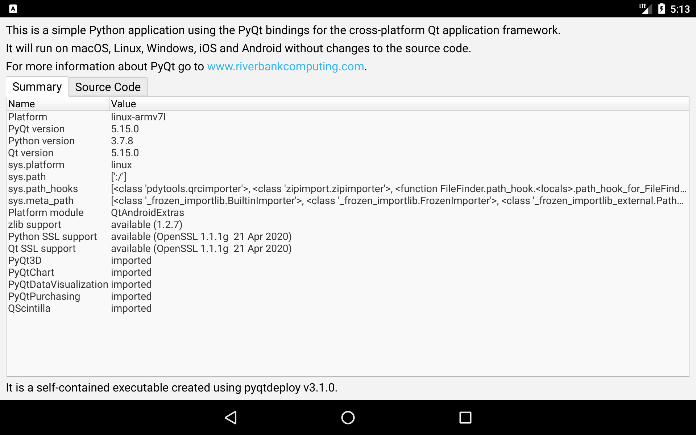
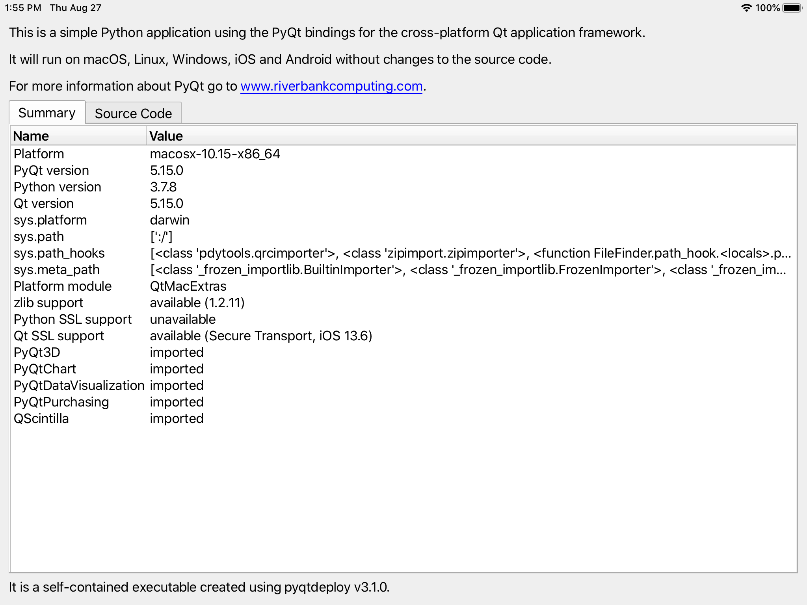
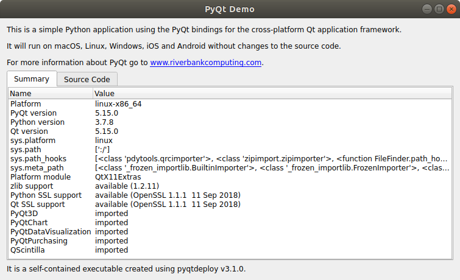
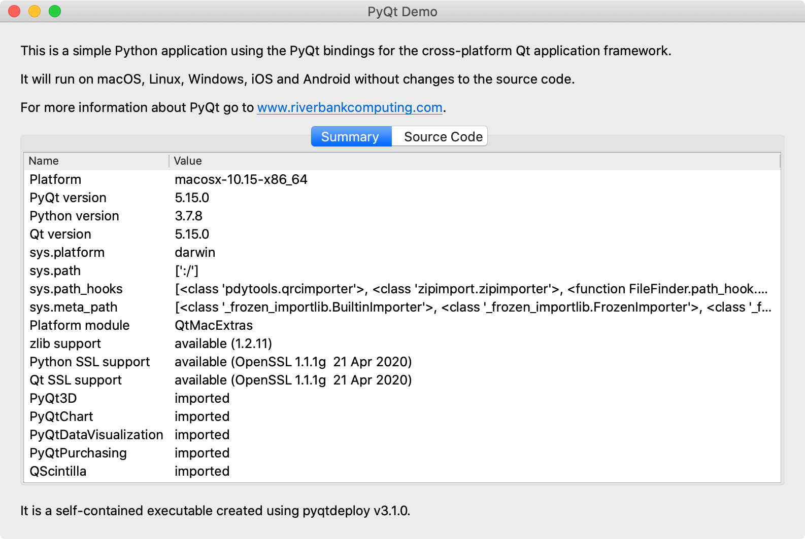
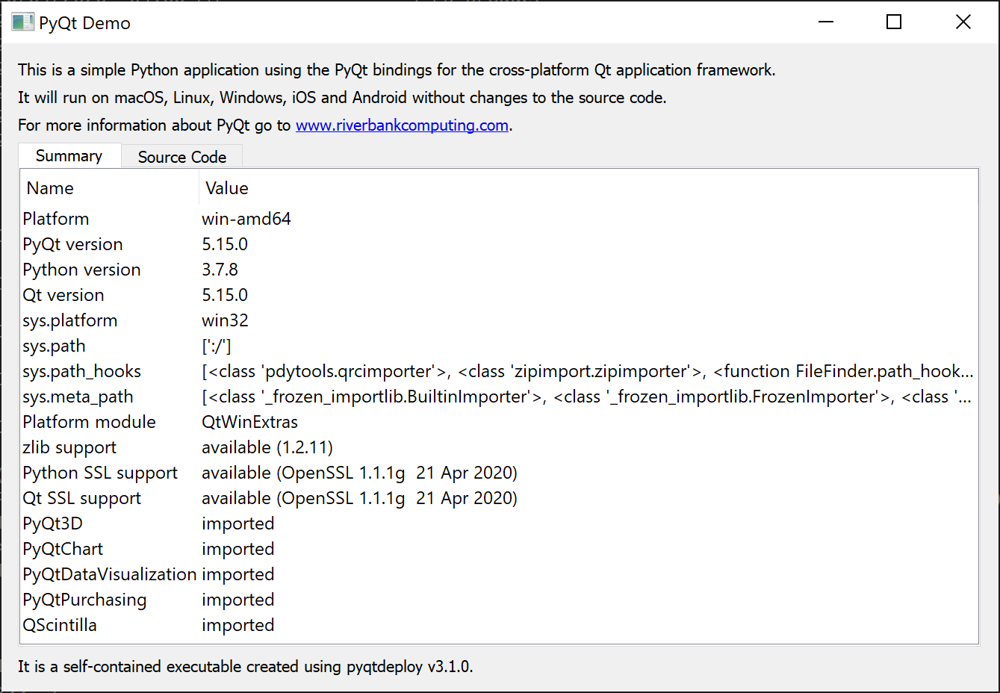

pyqt-demo¶
The pyqtdeploy
source package contains
a demo application called pyqt-demo which can be found in the
demo sub-directory.
The demo consists of:
pyqt-demo.pywhich is the source code of the demosysroot.tomlwhich is the sysroot specification used by pyqtdeploy-sysroot to build a target-specific sysrootpyqt-demo.pdtwhich is the pyqtdeploy project file describing the application and its componentsbuild-demo.pywhich is a simple script to run pyqtdeploy-sysroot and pyqtdeploy-build to create the demo executable
Note that executables can be created for all supported targets without requiring any changes to any of the above.
When run, the demo displays a GUI table of interesting values including a copy of the source code itself.
Throughout the rest of this documentation the demo will be used as a working example which we will look at in detail.
Note
It is recommended that, at first, you use the same versions (as specified
in sysroot.toml) of the different component packages shown above.
Only when you have those working should you then use the versions that you
really want to use. This will require you to modify sysroot.toml
and/or pyqt-demo.pdt.
Building the Demo¶
To build the demo for the native target, run:
python build-demo.py
The sysroot that will be created will contain the following components:
Python
Qt
OpenSSL
zlib
SIP
PyQt
PyQt3D
PyQtChart
PyQtDataVisualization
PyQtPurchasing
QScintilla
If you don’t want to build all of these then edit sysroot.toml and
remove the ones you don’t want. (The Python, Qt, SIP and PyQt components are
required.)
Note that, on Linux, macOS and Windows, Qt will be built from source which can take a significant amount of time.
If you are building the demo for either Android or iOS then you must also
install an appropriate version of Qt from an installer from The Qt Company as
pyqtdeploy-sysroot does not support building Qt from source for
those platforms. The --qmake option must be used to specify the full path
name of the qmake executable.
build-demo.py has a number of other command line options. To see them all,
run:
python build-demo.py --help
Note
You must ensure that the target-specific development environment (e.g. Android Studio, MSVC, Xcode) is installed and properly configured on your system. With a Linux target you must also ensure that the development packages required to build Qt are installed. The names of these packages vary depending on the Linux distribution - please see the Qt documentation.
Android¶
Host platform used: macOS Catalina (v10.15.6)
Development tools used: NDK r21d, SDK build tools v28.0.3
Python SSL support implemented: dynamically linked bundled OpenSSL.
Qt SSL support implemented: dynamically linked bundled OpenSSL.
Environment: ANDROID_NDK_PLATFORM=android-24
iOS¶
Host platform used: macOS Catalina (v10.15.6)
Development tools used: Xcode v11.6
Python SSL support implemented: none.
Qt SSL support implemented: dynamically linked Secure Transport.
Linux¶
Host platform used: Ubuntu 18.04.5 LTS
Development tools used: gcc v7.5.0
Python SSL support implemented: dynamically linked system OpenSSL
Qt SSL support implemented: dynamically linked system OpenSSL
macOS¶
Host platform used: macOS Catalina (v10.15.6)
Development tools used: Xcode v11.6
Python SSL support implemented: statically linked OpenSSL.
Qt SSL support implemented: statically linked OpenSSL.
Windows¶
Host platform used: Windows 10 Pro (v2004)
Development tools used: Visual Studio Build Tools 2019 (v16.7.2)
Python SSL support implemented: statically linked OpenSSL.
Qt SSL support implemented: statically linked OpenSSL.